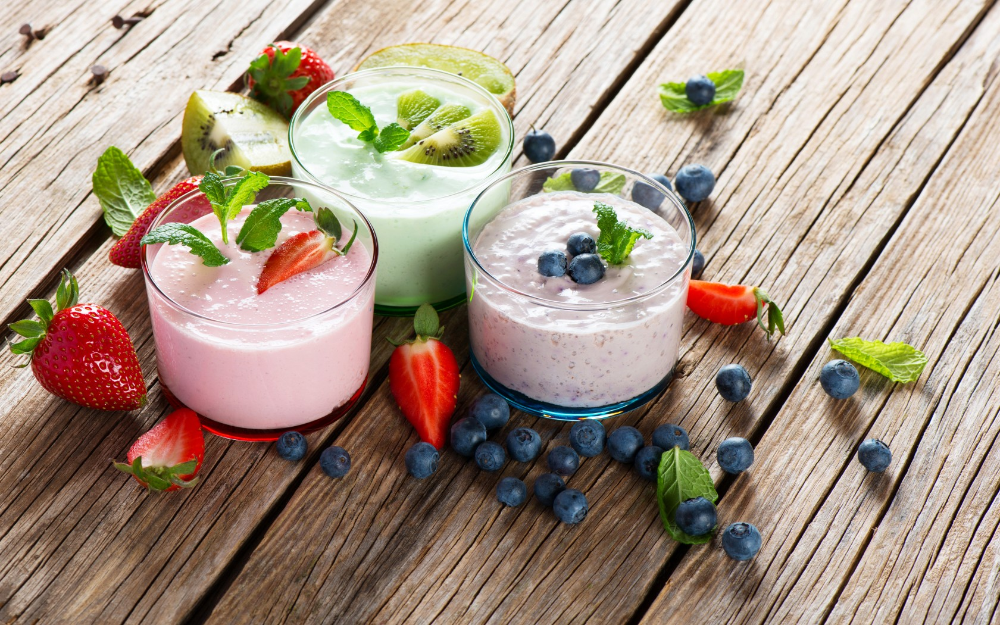

OUR MENU
Gourmet Castle
Fine Dining & Gourmet Takeaway
View the Menu
Gourmet Castle Restaurant
246 Wonderful Paradise Ln.
Pasadena, CA 91101
Phone 626.511.1170
Fax 626.992.1020
Appetizers
- Bella's Artichokes
- Roasted artichokes with chipotle aioli and cream cheese
- Bruschetta Blue Delight
- Blue cheese and citrus bruschetta
- Pomme Dulse
- Baked potatoes with crisped dulse
- Green Love Crostini
- Crostini with young pecorino, grilled figs and arugula & mint pesto
- Focaccia di Carciofi
- Artichoke focaccia with fresh thyme
Salads & More
- Green Delight
- Watercress, frisee and avocado salad
- Gourmet Yam Taohu
- Thai tofu salad yam taohu
- Panini Deluxe
- Buffalo mozzarella basil panini
Main Courses
- Crispy Gnocchi with Arugula
- Pan-fried potato gnocchi with arugula salad
- Sea Palm Spicy Peanut Curry
- Tender sea palm noodles, seasoned vegetables, spicy peanut curry and tempeh fenel croquettes
- Lentil Caviar & Arugula
- Black lentil curry with arugula salad, caramelized shallots and roasted garlic
- Tamari-Maple Glazed Tofu
- Wasabi emulsion, sesame seeds and scallions
- Maple Barbeque Tofu
- Grilled marinated tofu, maple barbeque sauce, tahini slaw, grilled seasonal vegetables and mashed potatoes
- Luxur Oyster
- King oyster mushroom with roasted cherries and sage
- Rigatoni di Cavolfiore
- Rigatoni with roasted cauliflower and spicy tomato sauce
Desserts
- French Plum Crepes
- Crepes with roasted french plums, yogurt & honey
- Butterscotch Pudding
- Butterscotch pudding with bittersweet ganache and caramelize white chocolate crispies
- Chocolate Gâteau de Crêpes
- Gâteau de crêpes with chocolate pastry cream and dulce de leche
- Dutch Baby With Sauteed Apples
- Dutch ginat oven-baked pancakes with sauteed apples
- Blueberry Napoleon
- Blueberry Napoleon with crème fraîche and raspberry powder
- Rings of Saturn
- Saturn peach on challah french toast
- Classic Atayef
- Syrian ricotta-filled dessert pancakes
Welcome To.....
We’re fiercely independent, priding ourself on simple, honest, modern Welsh food. Obsessively, we seek the best, most mouth-watering ingredients we can find locally from farmers, growers, makers and markets, fusing them together to create innovative flavours and fresh, vibrant, sumptuous dishes; putting our passion for your palate on a plate.
Open from breakfast 'till cocktails daily, every dish we serve is lovingly handmade with heart from our home on Mill Lane.
New: Pitch Cocktail Masterclass
Watch and learn as our Pitch cocktail expert makes three cocktails of your choice from our menu... then have a go at making (and tasting) yourself!
Perfect for a girly get-together, birthday, stag or hen parties or to kick off any great night out. The session lasts roughly 60-90 minutes, and is just £30pp (minimum of six guests) with welcome drink and canapés included. To book call us on 02920 228 882
-

- 
Make a Reservation
If you would like to book a table at Pitch for up to 8 people,
please use our booking form. We will send you confirmation as soon as we can.
For bookings less than 48 hours away please call us on 029 2022 8882.
Bookings by phone only for Millennium Stadium match days.